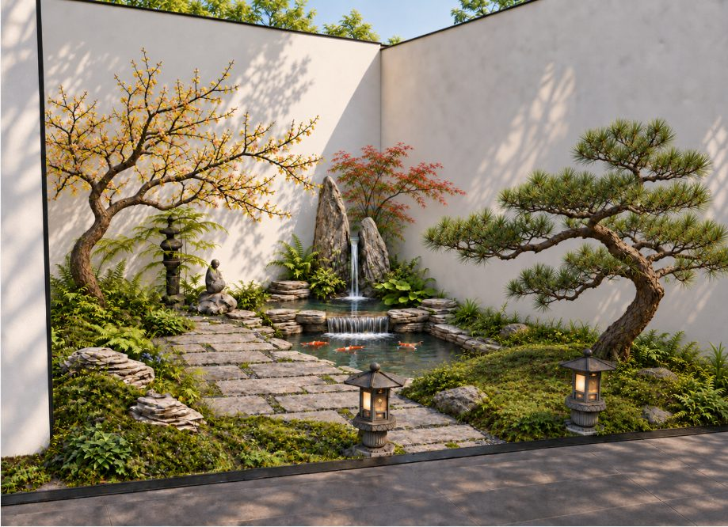
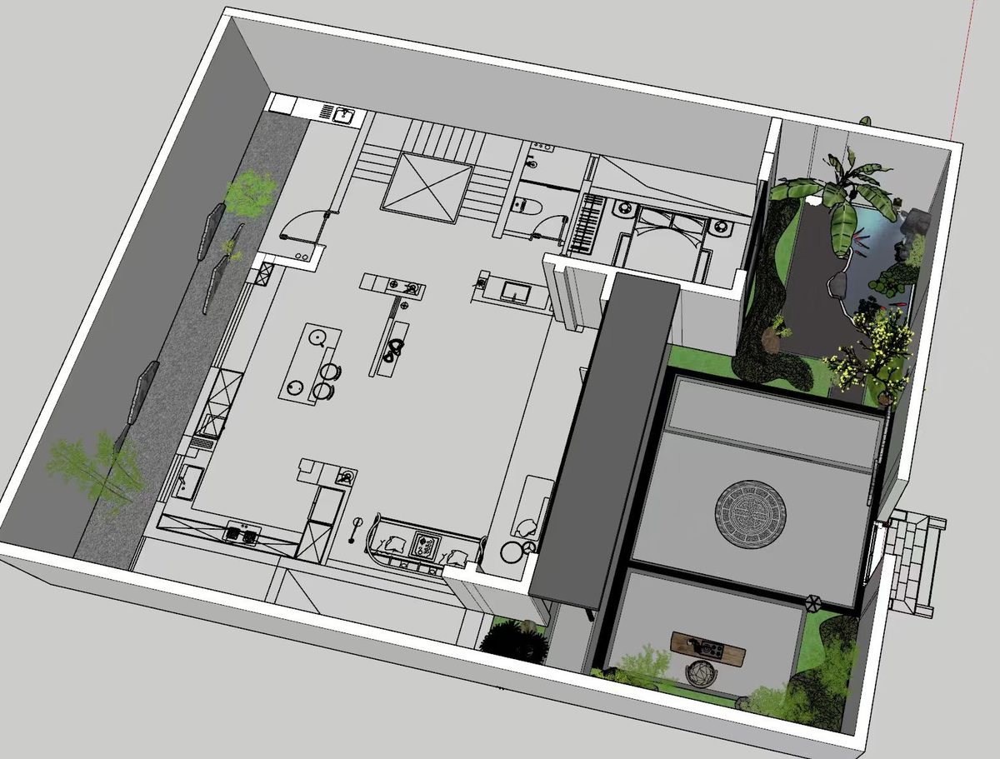

01 / WHY
人为什么要做庭院？
因为庭院承载的，从来不只是景观。它承载的是你想怎样度过一天，怎样和家人相处，怎样靠近自然，又怎样在忙碌之后重新回到自己。
清晨推开门，有光、有风，也有一棵慢慢长大的树。
雨后坐在廊下，不必赶时间，只听水声。
相聚孩子、朋友、家人，在院子里真正发生生活。
独处什么都不做，也有一个地方让自己安静下来。

因为庭院承载的，从来不只是景观。它承载的是你想怎样度过一天，怎样和家人相处，怎样靠近自然，又怎样在忙碌之后重新回到自己。
所以我们不替你决定一种标准答案。我们和你一起看地图、看现场、做取舍，把模糊的向往，一点一点变成可以落地的院子。
你想在这里怎样生活？哪些事情最重要？哪些麻烦以后最不想面对？
空间、排水、动线、植物、预算和维护，不是堆答案，而是找到真正决定其他事情的那个“一”。
少一点堆砌，多一点留白。把钱、时间和精力留给真正值得的地方。
我们负责把路看清。最后在这里喝茶、吃饭、看树、生活的人，是你。
好院子不是完工那天最漂亮，而是三年以后，你依然愿意使用它，它也依然舒服。

大一造园的设计经验来自住宅区、商业与公共景观，也来自一个个真实庭院的现场。尺度变小以后，判断反而要更细：一条路怎么走、一棵树长大以后怎样、一场雨之后水往哪里去。
对外只保留与设计能力有关的职业信息。我们更愿意让案例、判断和最终的生活体验说明问题。
查看过往实践 ↗不用一开始就知道所有答案。先把最重要的那件事看清。